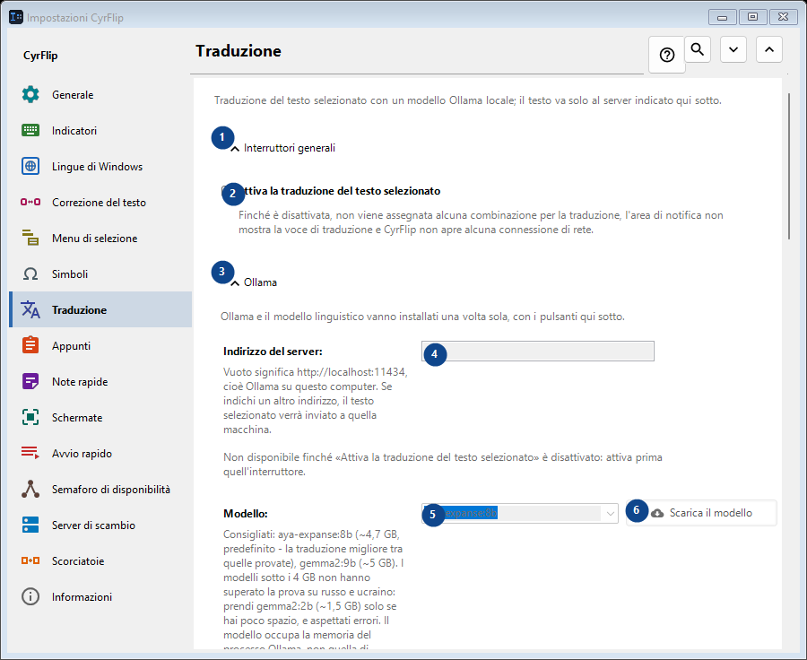
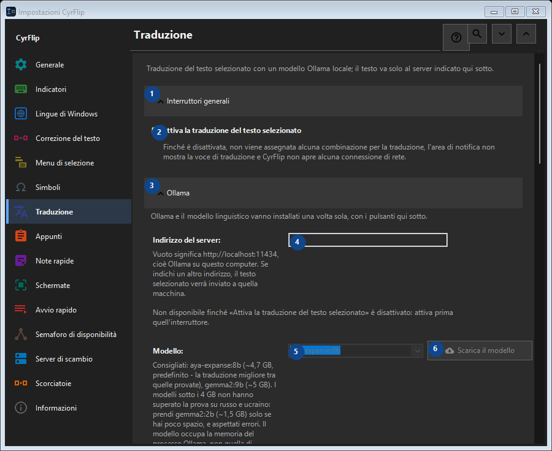

Traduzione
A cosa serve
Traduzione del testo selezionato con un modello Ollama locale; il testo va solo al server indicato qui sotto.


Ordine delle operazioni
Le impostazioni si applicano subito. Non serve un ordine preciso; usa i gruppi qui sotto.
Elementi
1. Interruttori generali
Usa questo comando per l’azione indicata. Leggi ogni richiesta di conferma prima di accettare.
Le tue scorciatoie2. Attiva la traduzione del testo selezionato
Finché è disattivata, non viene assegnata alcuna combinazione per la traduzione, l'area di notifica non mostra la voce di traduzione e CyrFlip non apre alcuna connessione di rete.
Le tue scorciatoie3. Ollama
Usa questo comando per l’azione indicata. Leggi ogni richiesta di conferma prima di accettare.
Le tue scorciatoie4. Indirizzo del server
Non disponibile finché «Attiva la traduzione del testo selezionato» è disattivato: attiva prima quell'interruttore. Questo elemento non è disponibile. Attiva prima la funzione o seleziona una voce.
Le tue scorciatoie5. Modello
Non disponibile finché «Attiva la traduzione del testo selezionato» è disattivato: attiva prima quell'interruttore. Questo elemento non è disponibile. Attiva prima la funzione o seleziona una voce.
Le tue scorciatoie6. Scarica il modello - Modello
Non disponibile finché «Attiva la traduzione del testo selezionato» è disattivato: attiva prima quell'interruttore. Questo elemento non è disponibile. Attiva prima la funzione o seleziona una voce.
Le tue scorciatoie7. Installa Ollama
Non disponibile finché «Attiva la traduzione del testo selezionato» è disattivato: attiva prima quell'interruttore. Questo elemento non è disponibile. Attiva prima la funzione o seleziona una voce.
Le tue scorciatoie8. Avvia Ollama
Non disponibile finché «Attiva la traduzione del testo selezionato» è disattivato: attiva prima quell'interruttore. Questo elemento non è disponibile. Attiva prima la funzione o seleziona una voce.
Le tue scorciatoie9. Verifica la connessione
Non disponibile finché «Attiva la traduzione del testo selezionato» è disattivato: attiva prima quell'interruttore. Questo elemento non è disponibile. Attiva prima la funzione o seleziona una voce.
Le tue scorciatoie10. Annulla
Usa questo comando per l’azione indicata. Leggi ogni richiesta di conferma prima di accettare. Questo elemento non è disponibile. Attiva prima la funzione o seleziona una voce.
Le tue scorciatoie11. Avvia Ollama automaticamente al momento della traduzione
Non disponibile finché «Attiva la traduzione del testo selezionato» è disattivato: attiva prima quell'interruttore. Questo elemento non è disponibile. Attiva prima la funzione o seleziona una voce.
Le tue scorciatoie12. Mantieni il modello in memoria (min)
Non disponibile finché «Attiva la traduzione del testo selezionato» è disattivato: attiva prima quell'interruttore. Questo elemento non è disponibile. Attiva prima la funzione o seleziona una voce.
Le tue scorciatoie13. Ollama e il modello linguistico vanno installati una volta sola, con i pulsanti qui sotto.
Scegli o inserisci il valore indicato dall’etichetta vicina. Controllalo prima di continuare. Questo elemento non è disponibile. Attiva prima la funzione o seleziona una voce.
Le tue scorciatoie14. Attendere il caricamento del modello al massimo (s)
Non disponibile finché «Attiva la traduzione del testo selezionato» è disattivato: attiva prima quell'interruttore. Questo elemento non è disponibile. Attiva prima la funzione o seleziona una voce.
Le tue scorciatoie15. Ollama e il modello linguistico vanno installati una volta sola, con i pulsanti qui sotto.
Scegli o inserisci il valore indicato dall’etichetta vicina. Controllalo prima di continuare. Questo elemento non è disponibile. Attiva prima la funzione o seleziona una voce.
Le tue scorciatoie16. Direzioni di traduzione
Usa questo comando per l’azione indicata. Leggi ogni richiesta di conferma prima di accettare.
Le tue scorciatoie17. Aggiungi direzione...
Non disponibile finché «Attiva la traduzione del testo selezionato» è disattivato: attiva prima quell'interruttore. Questo elemento non è disponibile. Attiva prima la funzione o seleziona una voce.
Le tue scorciatoie18. Risultato
Usa questo comando per l’azione indicata. Leggi ogni richiesta di conferma prima di accettare.
Le tue scorciatoie19. Copia la traduzione negli appunti
Non disponibile finché «Attiva la traduzione del testo selezionato» è disattivato: attiva prima quell'interruttore. Questo elemento non è disponibile. Attiva prima la funzione o seleziona una voce.
Le tue scorciatoie20. Incolla subito la traduzione al posto della selezione
Non disponibile finché «Attiva la traduzione del testo selezionato» è disattivato: attiva prima quell'interruttore. Questo elemento non è disponibile. Attiva prima la funzione o seleziona una voce.
Le tue scorciatoie21. Mostra il testo originale accanto alla traduzione
Non disponibile finché «Attiva la traduzione del testo selezionato» è disattivato: attiva prima quell'interruttore. Questo elemento non è disponibile. Attiva prima la funzione o seleziona una voce.
Le tue scorciatoie22. Chiudi la finestra dopo (s)
Non disponibile finché «Attiva la traduzione del testo selezionato» è disattivato: attiva prima quell'interruttore. Questo elemento non è disponibile. Attiva prima la funzione o seleziona una voce.
Le tue scorciatoie23. Non disponibile finché «Attiva la traduzione del testo selezionato» è disattivato: attiva prima quell'interruttore.
Scegli o inserisci il valore indicato dall’etichetta vicina. Controllalo prima di continuare. Questo elemento non è disponibile. Attiva prima la funzione o seleziona una voce.
Le tue scorciatoie